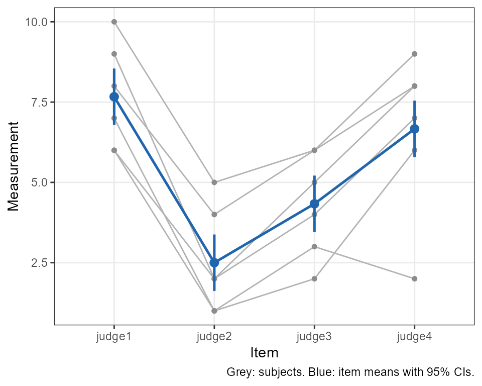
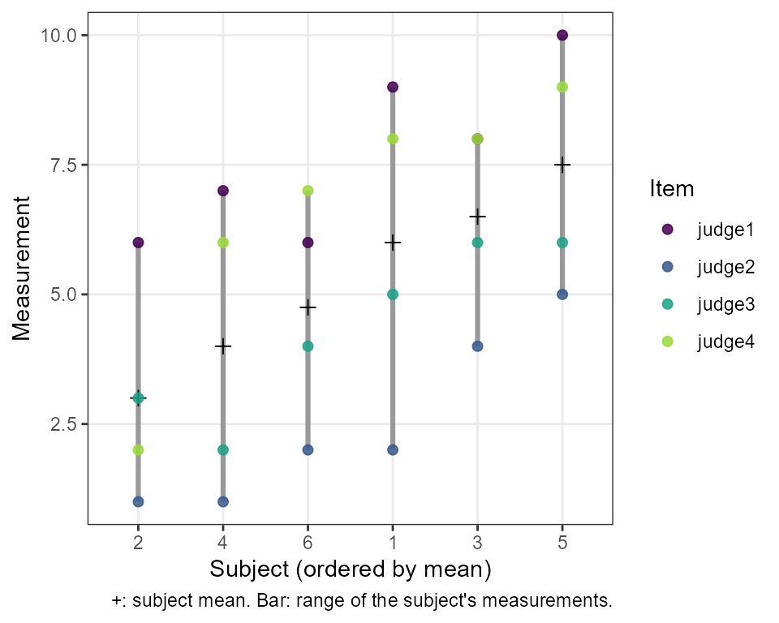
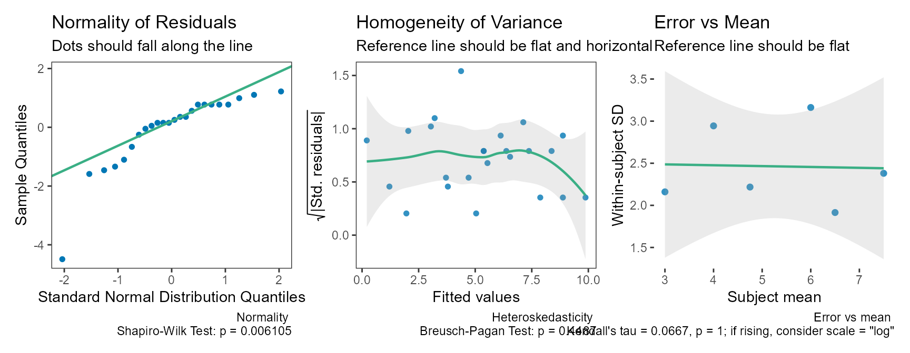

Reliability Analysis
Aaron R. Caldwell
Last Updated: 2026-10-17
Source:vignettes/reliability_analysis.Rmd
reliability_analysis.RmdBackground
Reliability studies ask two related questions. Relative reliability asks whether a measurement ranks subjects consistently; it is summarised by an intraclass correlation coefficient (ICC), the proportion of the observed variance that is due to real differences between subjects. Absolute reliability asks how much a single measurement varies around a subject’s true value; it is summarised by the standard error of measurement (SEM), also called the typical error (Hopkins 2000), often expressed as a coefficient of variation. The calculations here follow Weir (2005), who in turn relies on Shrout and Fleiss (1979) and McGraw and Wong (1996).
SimplyAgree has one function for each question, each
returning a standard htest object with a confidence
interval and, optionally, a test:
| Function | Estimates |
|---|---|
icc_test() |
One ICC |
reli_err_test() |
The SEM, SEE or SEP, in units, sympercents or % of the mean |
power_icc(), precision_icc()
|
Sample size for an ICC study |
The older reli_stats() and reli_aov(),
which return everything at once, are superseded (see Legacy functions).
All functions accept data in three ways: a formula,
values ~ item | id; long data, with measure,
item and id column names; or wide data, one
row per subject, with the item columns in col.names. An
item is whatever is repeated: a trial, an occasion, a rater, or
a judge.
As an example, take the data of Shrout and Fleiss (1979) (6 subjects rated by 4 judges).
The intraclass correlation coefficient
icc_test(col.names = judges, data = dat)
#>
#> Two-way, consistency, single-measure ICC [Shrout & Fleiss ICC(3,1)]
#>
#> data: judge1, judge2, judge3, judge4
#>
#> alternative hypothesis: two.sided
#> 95 percent confidence interval:
#> 0.3424648 0.9458583
#> sample estimates:
#> ICC(C,1)
#> 0.7148407Choosing the ICC
The form is set by three arguments. model says whether
every subject is measured on the same items ("twoway") or
each subject by different items ("oneway");
type says whether systematic differences between items
count as error ("agreement") or not
("consistency"); and unit says whether the
reliability of a single measurement ("single") or of the
mean of all k items ("average") is wanted.
model |
type |
unit |
McGraw & Wong | Shrout & Fleiss |
|---|---|---|---|---|
| oneway | agreement | single | ICC(1) | ICC(1,1) |
| oneway | agreement | average | ICC(k) | ICC(1,k) |
| twoway | agreement | single | ICC(A,1) | ICC(2,1) |
| twoway | agreement | average | ICC(A,k) | ICC(2,k) |
| twoway | consistency | single | ICC(C,1) | ICC(3,1) |
| twoway | consistency | average | ICC(C,k) | ICC(3,k) |
The default, ICC(C,1), follows Hopkins (2000) and Weir
(2005): check for systematic change
between trials separately (for example with t.test() for
two trials), then report the consistency ICC, which is tied to the SEM.
Others, such as Koo and Li (2016), recommend absolute agreement for
test-retest studies:
icc_test(col.names = judges, data = dat, type = "agreement")
#>
#> Two-way, absolute agreement, single-measure ICC [Shrout & Fleiss
#> ICC(2,1)]
#>
#> data: judge1, judge2, judge3, judge4
#>
#> alternative hypothesis: two.sided
#> 95 percent confidence interval:
#> 0.01878651 0.76108437
#> sample estimates:
#> ICC(A,1)
#> 0.2897638Testing against a threshold
By default no test is done: testing whether an ICC differs from 0 is rarely informative. No qualitative labels (“good”, “excellent”) are given either, because published cutoffs disagree and the ICC depends on how much subjects differ from each other (Weir 2005). To claim that reliability exceeds a value, test against it:
res <- icc_test(col.names = judges, data = dat,
null.value = 0.5, alternative = "greater")
res
#>
#> Two-way, consistency, single-measure ICC [Shrout & Fleiss ICC(3,1)]
#>
#> data: judge1, judge2, judge3, judge4
#> F = 2.2054, df1 = 5, df2 = 15, p-value = 0.108
#> alternative hypothesis: true ICC is greater than 0.5
#> 95 percent confidence interval:
#> 0.4118341 1.0000000
#> sample estimates:
#> ICC(C,1)
#> 0.7148407With a one-sided alternative the interval is one-sided too: its lower limit is the one-sided bound that matches the test.
Describing the result
summary() describes the result in words, in one of two
styles. With a test, the default is the usual decision about the null
hypothesis:
summary(res)
#> The test is not statistically significant (F(5, 15) = 2.21, p = 0.108;
#> ICC(C,1) = 0.715, 95% lower bound 0.412) at the 0.05 alpha level. The
#> null hypothesis cannot be rejected: at the desired error rate, it
#> cannot be stated that the true ICC is greater than 0.5. The estimate is
#> the two-way, consistency, single-measure ICC (McGraw & Wong ICC(C,1);
#> Shrout & Fleiss ICC(3,1)): the reliability of a single measurement,
#> excluding systematic differences between items. The data had 6 subjects
#> and 4 items (24 measurements, none missing); variance components were
#> estimated by analysis of variance. The interval and F test are exact
#> (McGraw & Wong, 1996).The estimation style, following Greenland (2019) and Rafi and Greenland (2020), describes the interval as a range of values compatible with the data and converts the p-value to an S-value, \(s = -\log_2 p\): the bits of information against the tested hypothesis, as surprising as \(s\) heads in a row from a fair coin.
summary(res, style = "estimation")
#> The estimated ICC(C,1) was 0.715 (95% lower compatibility bound 0.412).
#> Values above this bound are the most compatible with the data, given
#> the model and its assumptions. Against the hypothesis that the true
#> ICC(C,1) is at most 0.5, p = 0.108, an S-value of 3.21 bits of
#> information (S = -log2 p): about as surprising as getting 3 heads in a
#> row from 3 tosses of a fair coin. The estimate is the two-way,
#> consistency, single-measure ICC (McGraw & Wong ICC(C,1); Shrout &
#> Fleiss ICC(3,1)): the reliability of a single measurement, excluding
#> systematic differences between items. The data had 6 subjects and 4
#> items (24 measurements, none missing); variance components were
#> estimated by analysis of variance. The interval and F test are exact
#> (McGraw & Wong, 1996).Missing data and the bootstrap
method = "anova" (the default) needs every subject
measured on every item. With missing measurements,
method = "reml" fits a linear mixed model; its intervals
use degrees of freedom based on the observed data and are approximate,
so a warning is given.
dat_na <- dat
dat_na$judge2[1] <- NA
icc_test(col.names = judges, data = dat_na, method = "reml")
#> Warning: 4.2% of subject-by-item cells are missing. Intervals and p-values use
#> observed-data degrees of freedom and are approximate; they may be liberal as
#> missingness increases. Consider boot = TRUE.
#>
#> Two-way, consistency, single-measure ICC [Shrout & Fleiss ICC(3,1)]
#> (REML)
#>
#> data: judge1, judge2, judge3, judge4
#>
#> alternative hypothesis: two.sided
#> 95 percent confidence interval:
#> 0.3861657 0.9541005
#> sample estimates:
#> ICC(C,1)
#> 0.7499675With clearly non-normal data, boot = TRUE gives a
bootstrap interval that resamples subjects. The interval type
(boot_ci) and the standard error used to studentize it
(se_method) were chosen from simulations described in
?icc_test.
set.seed(2026)
icc_test(col.names = judges, data = dat, boot = TRUE, replicates = 999)
#>
#> Two-way, consistency, single-measure ICC [Shrout & Fleiss ICC(3,1)]
#> with nonparametric (subject) bootstrap studentized interval
#>
#> data: judge1, judge2, judge3, judge4
#>
#> alternative hypothesis: two.sided
#> 95 percent confidence interval:
#> 0.3739154 0.8993188
#> sample estimates:
#> ICC(C,1)
#> 0.7148407Plots and diagnostics
plot() shows each subject’s measurements across the
items (grey), with the item means and their 95% confidence intervals
(blue), so systematic differences between items stand out against the
spread of subjects.

Other views are chosen with type:
"subjects" orders the subjects by their mean and shows each
subject’s measurements, which compares the spread between subjects with
the scatter within subjects (what the ICC summarises);
"items" shows each measurement’s deviation from its
subject’s mean by item (systematic item differences, which count as
error for an agreement ICC but not for a consistency ICC); and
"pairs" plots each pair of items against each other with
the line of identity.
plot(res, type = "subjects")
check() gives model diagnostics: the normality and
homogeneity of the residuals, and the within-subject SD against the
subject mean. An SD that rises with the mean means the error grows with
the size of the measurement, and a coefficient of variation
(reli_err_test(scale = "log"), below) describes it better
than an error in units.
check(res)
Measurement error
reli_err_test() estimates the standard error of
measurement (SEM), estimate (SEE) or prediction (SEP). With the defaults
it gives the typical error: \(\sqrt{MS_E}\) from the two-way analysis of
variance, which excludes systematic differences between trials. As an
example, take data set A of Weir (2005) (8 subjects, 2 trials).
weir <- data.frame(t1 = c(146, 148, 170, 90, 157, 156, 176, 205),
t2 = c(140, 152, 152, 99, 145, 153, 167, 218))
reli_err_test(col.names = c("t1", "t2"), data = weir)
#>
#> Standard error of measurement (two-way, consistency)
#>
#> data: t1, t2
#>
#> alternative hypothesis: two.sided
#> 95 percent confidence interval:
#> 4.996445 15.380402
#> sample estimates:
#> SEM
#> 7.556927To show that the error is smaller than an acceptable value, give it
as null.value (the default alternative is
"less"):
reli_err_test(col.names = c("t1", "t2"), data = weir, null.value = 12)
#>
#> Standard error of measurement (two-way, consistency)
#>
#> data: t1, t2
#> X-squared = 2.776, df = 7, p-value = 0.09508
#> alternative hypothesis: true SEM is less than 12
#> 95 percent confidence interval:
#> 0.00000 13.58094
#> sample estimates:
#> SEM
#> 7.556927The SEE is the standard error of a subject’s estimated true score, and the SEP is used to judge whether a change from the estimated true score is real (Weir 2005). Both depend on the ICC and on how much subjects differ, so the SEM is the better general description of measurement error.
reli_err_test(col.names = c("t1", "t2"), data = weir, stat = "SEP")
#>
#> Standard error of prediction (two-way, consistency) from ICC(C,1)
#>
#> data: t1, t2
#>
#> alternative hypothesis: two.sided
#> 95 percent confidence interval:
#> 6.331135 17.562180
#> sample estimates:
#> SEP
#> 10.5446The SEE and SEP use the SD matched to the ICC’s denominator (for the consistency ICC, \(SD^2 = \sigma^2_{subjects} + \sigma^2_{error}\)), so that \(SD\sqrt{1 - ICC}\) equals the SEM exactly. Weir (2005) uses the SD of all the measurements instead, so his SEE and SEP (7.1 and 10.2 here) are slightly smaller than these (7.35 and 10.54).
Coefficient of variation
When the error grows with the size of the measurements, it is better
expressed relative to them (Atkinson and Nevill 1998; Hopkins 2000).
reli_err_test() gives the coefficient of variation in two
ways.
scale = "log" analyses the log-transformed measurements
and reports 100 times the statistic, in sympercents (Cole 2000). The SEM
keeps its exact interval.
reli_err_test(col.names = c("t1", "t2"), data = weir, scale = "log")
#>
#> Standard error of measurement (two-way, consistency), log scale
#> (sympercents)
#>
#> data: t1, t2
#>
#> alternative hypothesis: two.sided
#> 95 percent confidence interval:
#> 3.327576 10.243176
#> sample estimates:
#> SEM (sympercent)
#> 5.032829A sympercent \(s\) converts to the conventional CV% as \(100\sqrt{\exp((s/100)^2) - 1}\); below about 15% the two are nearly identical (10 sympercents is a CV of 10.03%). The conversion is monotone, so it can be applied to the interval limits too.
scale = "mean" divides the statistic by the grand mean
(the “pooled” CV); its interval allows for the uncertainty in the
mean.
reli_err_test(col.names = c("t1", "t2"), data = weir, scale = "mean")
#>
#> Standard error of measurement (two-way, consistency), as a percentage
#> of the grand mean
#>
#> data: t1, t2
#>
#> alternative hypothesis: two.sided
#> 95 percent confidence interval:
#> 2.731810 8.743404
#> sample estimates:
#> SEM (% of mean)
#> 4.887261In both cases null.value is on the same scale as the
estimate.
MDC, SDD and the repeatability coefficient
The minimal detectable change (MDC), smallest detectable or real
difference (SDD, SRD), “minimal difference” (Weir 2005) and repeatability coefficient
are all the SEM scaled by \(z
\sqrt{2}\): for 95%, \(1.96 \sqrt{2}
\times SEM\), the change between two measurements that
measurement error alone would exceed only 5% of the time. Scale the
estimate and interval of reli_err_test():
sem <- reli_err_test(col.names = c("t1", "t2"), data = weir)
qnorm(0.975) * sqrt(2) * c(sem$estimate, sem$conf.int)
#> SEM
#> 20.94635 13.84918 42.63152With two trials this is the half-width of the limits of agreement of
agreement_limit(), which also reports the bias between
trials. Weir (2005) notes that, strictly, real change
should be judged against an interval around the subject’s estimated true
score, using the SEP.
Planning a reliability study
power_icc() gives the power of the ICC test, or the
number of subjects (n), measurements per subject
(k), or the ICC under the alternative needed for a given
power. For example, the subjects needed to show, with two trials and 80%
power, that the ICC is above 0.6 when it is really 0.8:
power_icc(rho0 = 0.6, rho1 = 0.8, k = 2, power = 0.8,
alternative = "greater")
#>
#> Power calculation for the one-way ICC, ICC(1) (exact F distribution)
#>
#> n = 38.90078
#> k = 2
#> rho0 = 0.6
#> rho1 = 0.8
#> sig.level = 0.05
#> power = 0.8
#> alternative = greater
#>
#> NOTE: n is the number of subjects; round up to a whole number.
#> n = number of subjects, k = measurements per subjectprecision_icc() instead plans for a narrow confidence
interval: here, the subjects needed for a 95% interval no wider than 0.2
around an ICC of 0.8, with three trials, with 80% assurance (the
probability that the interval is that narrow).
precision_icc(rho = 0.8, k = 3, width = 0.2, assurance = 0.8)
#>
#> Precision (confidence interval width) calculation for the one-way ICC, ICC(1) (exact F distribution)
#>
#> n = 48.34247
#> k = 3
#> rho = 0.8
#> width = 0.2
#> conf.level = 0.95
#> assurance = 0.8
#>
#> NOTE: n is the number of subjects; round up to a whole number.
#> n = number of subjects, k = measurements per subject; width = upper minus lower limitBoth are exact for the one-way and consistency ICCs;
method = "approximate" reproduces the published formulas of
Walter et al. (1998) and Zou
(2012) (see also Mondal et al. (2024)). The agreement ICC has no exact
distribution and is not supported.
Legacy functions
reli_stats() (linear mixed model) and
reli_aov() (analysis of variance) return all six ICCs, the
CV, SEM, SEE and SEP at once. They are superseded but still work.
reli_aov(data = dat, wide = TRUE, col.names = judges)
#>
#> Coefficient of Variation (%): 19.1
#> Standard Error of Measurement (SEM): 1.01
#> Standard Error of the Estimate (SEE): 1.22
#> Standard Error of Prediction (SEP): 1.9
#>
#> Intraclass Correlation Coefficients with 95 % C.I.
#> Model Measures Type ICC Lower CI Upper CI
#> 1 one-way random Agreement ICC1 0.1657 -0.13293 0.7226
#> 2 two-way random Agreement ICC2 0.2898 0.01879 0.7611
#> 3 two-way fixed Consistency ICC3 0.7148 0.34246 0.9459
#> 4 one-way random Avg. Agreement ICC1k 0.4428 -0.88444 0.9124
#> 5 two-way random Avg. Agreement ICC2k 0.6201 0.07114 0.9272
#> 6 two-way fixed Avg. Consistency ICC3k 0.9093 0.67567 0.9859Since version 0.3.1 they use the same engine as
icc_test(). In particular, their ICC intervals are now
two-sided. Previous versions used conf.level in each tail,
so a “95%” interval was really a 90% interval; the old numbers at
conf.level = c are reproduced with
conf.level = 1 - 2 * (1 - c). Their SEE and SEP keep the SD
of all the measurements, as in Weir (2005). See ?reli_stats for
the other changes.
Calculative approach
Model and mean squares
For n subjects each measured on k items, the two-way model is \(y_{ij} = \mu + s_i + t_j + e_{ij}\), with subject effects \(s_i\) (variance \(\sigma^2_s\)), item effects \(t_j\) (\(\sigma^2_t\)) and error \(e_{ij}\) (\(\sigma^2_e\)). The analysis of variance gives the mean squares for subjects (\(MS_B\), \(n - 1\) df), items (\(MS_J\), \(k - 1\) df) and error (\(MS_E\), \((n-1)(k-1)\) df), and the within-subject mean square \(MS_W = (MS_J + (n-1) MS_E)/n\) (\(n(k-1)\) df). Their expectations are
\[ E(MS_B) = k\sigma^2_s + \sigma^2_e, \quad E(MS_J) = n\sigma^2_t + \sigma^2_e, \quad E(MS_E) = \sigma^2_e. \]
With method = "reml", the variance components come from
a linear mixed model and the mean squares are reconstructed from
them.
Intraclass correlation coefficients
\[ ICC(1) = \frac{MS_B - MS_W}{MS_B + (k-1) MS_W} \]
\[ ICC(A,1) = \frac{MS_B - MS_E}{MS_B + (k-1) MS_E + k (MS_J - MS_E)/n} \]
\[ ICC(C,1) = \frac{MS_B - MS_E}{MS_B + (k-1) MS_E} \]
The average-measure forms are the Spearman-Brown projection of the single-measure form to k items, \(k\rho / (1 + (k-1)\rho)\); for example \(ICC(C,k) = (MS_B - MS_E)/MS_B\) and \(ICC(A,k) = (MS_B - MS_E)/(MS_B + (MS_J - MS_E)/n)\).
Confidence intervals and tests
A two-sided \(1 - \alpha\) interval uses \(\alpha/2\) in each tail (Shrout and Fleiss 1979; McGraw and Wong 1996). For ICC(1) and ICC(C,1), with \(F = MS_B/MS_W\) or \(MS_B/MS_E\) and its degrees of freedom \((\nu_1, \nu_2)\),
\[ F_L = \frac{F}{F_{1-\alpha/2;\, \nu_1, \nu_2}}, \quad F_U = F \cdot F_{1-\alpha/2;\, \nu_2, \nu_1}, \quad \text{limits} = \frac{F_{L,U} - 1}{F_{L,U} + k - 1}. \]
These intervals are exact. For ICC(A,1) the denominator degrees of freedom are approximated (Satterthwaite 1946; McGraw and Wong 1996),
\[ v = \frac{(a MS_J + b MS_E)^2}{\frac{(a MS_J)^2}{k-1} + \frac{(b MS_E)^2}{(n-1)(k-1)}}, \quad a = \frac{k \hat\rho}{n(1-\hat\rho)}, \quad b = 1 + \frac{k\hat\rho (n-1)}{n(1-\hat\rho)}, \]
and with \(F^*_{L} = F_{1-\alpha/2;\, n-1, v}\) and \(F^*_{U} = F_{1-\alpha/2;\, v, n-1}\),
\[ L = \frac{n(MS_B - F^*_L MS_E)}{F^*_L (k MS_J + (kn - k - n) MS_E) + n MS_B}, \quad U = \frac{n(F^*_U MS_B - MS_E)}{k MS_J + (kn - k - n) MS_E + n F^*_U MS_B}. \]
The tests of \(H_0: \rho = \rho_0\) are the F tests of McGraw and Wong (1996): for ICC(C,1), \(F = (MS_B/MS_E)(1-\rho_0)/(1 + (k-1)\rho_0)\) on \((n-1, (n-1)(k-1))\) degrees of freedom, and similarly for the other forms.
Standard errors of measurement
| Statistic | Estimate | Interval |
|---|---|---|
| SEM, two-way consistency | \(\sqrt{MS_E}\) | exact \(\chi^2\) |
| SEM, two-way agreement | \(\sqrt{(MS_J + (n-1)MS_E)/n}\) | Satterthwaite \(\chi^2\) |
| SEM, one-way | \(\sqrt{MS_W}\) | exact \(\chi^2\) |
| SEE | \(SD\sqrt{ICC(1-ICC)}\) | delta method, log scale |
| SEP | \(SD\sqrt{1-ICC^2}\) | delta method, log scale |
For example, the exact interval for the consistency SEM is \(\sqrt{\nu MS_E / \chi^2_{1-\alpha/2;\,\nu}}\) to \(\sqrt{\nu MS_E / \chi^2_{\alpha/2;\,\nu}}\) with \(\nu = (n-1)(k-1)\).
Inter-Rater Reliability
In some cases, the reliability of a categorical or ordinal scale may
be worth investigating. For example, physicians may want to develop a
diagnosis tool and ensure that the diagnosis is reliable (i.e.,
categorical designation) or severity of the disease (i.e., a Likert-type
scale). Coefficients can be calculated to assess the degree of
inter-rater reliability. In its simplest form, the percent agreement
between all the raters can be calculated. All other coefficients of
agreement are essentially trying to “correct” for random guessing of the
rater. The function to make these calculations in the
SimplyAgree is agree_coef, and it produces 4
estimates: percent agreement, Gwet’s AC, Fleiss’ Kappa, and
Krippendorff’s Alpha. However, other packages provide much a much
greater breadth of calculative approaches (Gwet 2019).
In the agree_coef function, the user can specify
weighted = TRUE. If this argument is set to true than the
ratings have quadratic weights applied to them. Essentially, this
penalizes values farther away from each other more than those close to
each other. For example, a pair of values equal to 3 and 4 would be
penalized less than a pair of values to 1 and 4. For more details, on
these “agreement coefficients” I refer all users to Gwet’s textbook on
inter-rater agreement (Gwet
2014).
As a demonstration, we can create a matrix of ratings.
ratermat1 = ("Rater1 Rater2 Rater3 Rater4
1 1 1 NA 1
2 2 2 3 2
3 3 3 3 3
4 3 3 3 3
5 2 2 2 2
6 1 2 3 4
7 4 4 4 4
8 1 1 2 1
9 2 2 2 2
10 NA 5 5 5
11 NA NA 1 1
12 NA NA 3 NA")
ratermat2 = as.matrix(read.table(textConnection(ratermat1),
header=TRUE,
row.names=1))We can then perform the analysis without the weights.
agree_coef(data = ratermat2,
wide = TRUE,
weighted = FALSE,
col.names = c("Rater1", "Rater2", "Rater3", "Rater4"))
#> est se lower.ci upper.ci
#> Percent Agreement 0.8181818 0.1256090 0.5417184 1
#> Gwet's AC1 0.7754441 0.1429500 0.4608133 1
#> Fleiss' Kappa 0.7611693 0.1530192 0.4243763 1
#> Kririppendorff's Alpha 0.7434211 0.1454787 0.4192743 1Or, perform it with weighting.
agree_coef(data = ratermat2,
wide = TRUE,
weighted = TRUE,
col.names = c("Rater1", "Rater2", "Rater3", "Rater4"))
#> est se lower.ci upper.ci
#> Percent Agreement 0.9753788 0.09061628 0.7759337 1
#> Gwet's AC2 0.9140007 0.10396224 0.6851814 1
#> Fleiss' Kappa 0.8649351 0.14603361 0.5435173 1
#> Kririppendorff's Alpha 0.8491071 0.12905120 0.5615632 1